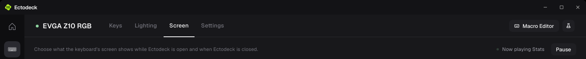
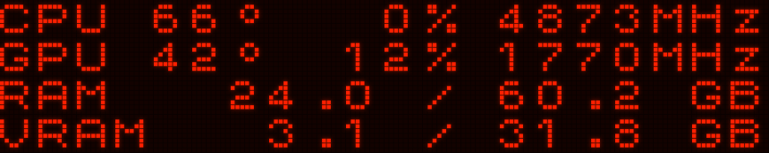
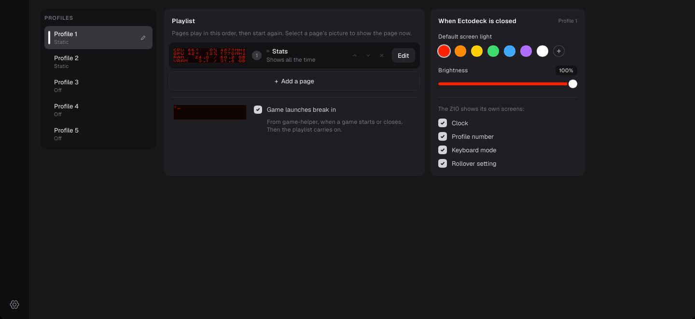

Ectodeck · Screen tab
A stage for the screen
The Z10's screen is a light source. On today's Screen tab it sits in its well like a sticker: the well stays the same flat gray whatever the screen shows, so nothing says the screen is on. The proposal lets the screen's own light fall on the well around it, the way the keyboard's picture lights its box on the other tabs. No bezel, no glass, the screen the same size.
Today, and the proposal
The app as it draws the Screen tab now, with the well rebuilt at its true size. Change the light and the state; the stage follows the light of the page on the screen.



Side by side, red
The stage alone, each way, at the app's size.
Why this one
One with the screen, your idea: the well takes the screen's own background color, the dark tint between its dots, and the screen's light falls across the well and the screen's background alike. The well stops being a frame and becomes the panel the screen lights. The dot grid still marks out the display, as it does on the keyboard. Lit by the screen, the first proposal, keeps the gray well; next to this, the screen sits in a lit frame rather than filling the stage.
The runner-up, and what I dropped
A deeper well sinks the well into the page with an inner shadow and a lighter middle. It adds depth in every state, but it treats the screen as a picture on a shelf and looks the same whether the screen is lit, dark or blue. Dropped outright: a reflection under the screen (it reads as glass, which you ruled out), a frame or bezel (ruled out), scan lines or flicker (the Z10's dots don't do that), and a glow that pulses with what the screen shows (busy).
How it would be built
| Part | Value | Note |
|---|---|---|
| Close light | The screen's rectangle with a drop shadow in the page's light color, 40px blur, 2px spread, 30% | Slint draws this natively: one drop shadow on the rectangle under the screen. |
| Wide light | A second rectangle the same size behind it, 150px blur, 40px spread, 10% | Slint gives one shadow per element, so the wide one is its own rectangle. |
| Brightness | Both scaled by the screen's brightness | At 0% brightness, or with the screen dark, no light at all. |
| Color | The light of the page on the screen now | A page with its own light changes the stage as it comes on; the game-launch frames use the profile's light. |
| The well | #131316, unchanged, clipping the light | The same well as the keyboard's box. |